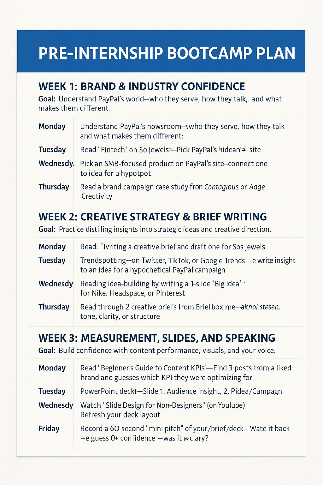

Feeling anxious before the start of my summer internship!
As the school year comes to a close and summer rolls around the corner, many college students can relate to what I’m experiencing: a looming wave of anxiety before the beginning of our internships. Personally, I am very nervous, and don’t know how to prepare and sharpen my skills before my start date.
Can ChatGPT help me prepare and ease my nerves?

My Conversation with ChatGPT4o
Prompt
This is my job description for the summer:
About the position The Corporate Affairs & Communications Strategy Intern will support PayPal’s Global Creative Strategy & Production team by developing innovative strategies and content campaigns that enhance PayPal’s brand engagement. This role focuses on uncovering insights and creating cohesive strategies that elevate brand reputation and trust among key audiences. Responsibilities * Uncover fresh and innovative insights, story angles, narratives, brand direction and creative ideas to help fuel editorial and creative campaign strategy. * Distill insights into a cohesive and inspiring strategy and creative brief, ensuring the work remains on strategy throughout the process and connects to how success is measured. * Build creative strategies and plans that result in increased brand reputation and brand trust for PayPal among SMBs and consumers. * Deliver clear and concise point of view, supported by data, for how to solve business challenges and ensure PayPal’s brand narrative remains top of mind for our customers. * Assessment of existing tools and processes to innovate and improve PayPal’s approach. * Partner with agency teams on ongoing trendspotting/research to develop an editorial content strategy and work with global editorial team to ensure strategy comes to life across external channels. * Partner with agency teams and leverage third-party tools to build a content intelligence and measurement framework to illustrate the business impact of our brand content. * Set up clear performance measurement before campaigns or content launches and gain alignment across cross-functional teams. * Oversee Performance Comms program and ensure learnings from campaigns inform future strategy development. * Review monthly/quarterly measurement reports for key brand channels and distill insights and data points, so they can be socialized with internal teams. * Stay up to date on the latest tools and platforms that could help inform creative strategies. * Collaborate with cross-functional teams, such as Strategic Finance, Marketing Ops and Social Media teams, to uncover internal data points and insights that can be fed into planning. * Support the Global Head of Content Creation and Innovation and the Global Director of Content with team planning and strategy development. Requirements * Experience in communications, marketing and/or advertising, with increasing responsibilities. * Bachelor’s degree required and graduate degree in marketing or related field preferred. * Advertising, digital, PR and/or social media agency experience is a plus. * Larger focus on the creative side of strategy, versus the analytical side. * Ability to synthesize large amounts of data and communicate key points clearly, succinctly and quickly to change direction, stop or start campaigns as needed. * Ability to achieve results in a fast-paced and dynamic environment, often on short deadlines. * Strong at leading brainstorms and ability to take a large idea and build it into a cohesive and clear plan that internal teams and agency partners can execute against. * Superb communication skills, including writing, verbal and editing. * Amazing with PowerPoint and able to use it to sell in an idea or outline a clean plan. * Strong project management skill set, very organized, attention to detail. * Problem solver and self-starter that is focused on delivering results. * Sense of curiosity and eagerness to innovate and improve upon what’s already been done. * Passion for PayPal’s brand, and commitment to our vision of democratizing financial services. Nice-to-haves * Experience in a fast-paced corporate environment. * Familiarity with digital marketing tools and analytics platforms. Benefits * Flexible work environment * Employee shares options * Health insurance * Life insurance * Dental insurance * Vision insurance #### Response That’s such an exciting role, Sose — it blends creative storytelling with strategic communications in a really high-impact way. You’ll be doing everything from uncovering narrative insights to building brand trust strategies, all while collaborating across teams and using data to back it up. Honestly, it sounds like a dream for someone with your background in communications, consumer psychology, and content creation.
Let me know if you want help with anything related to the role — from prepping presentations, crafting creative briefs, or even making sense of content analytics. I’ve got your back! #### Prompt To be honest, Im really nervous! I know it may seem like this job is right up my alley, but i feel like im not prepared at ALL. and my first day is less than a month away! i dont understand so many basics of a financial company like PayPal and don’t know how i wont make myself look like an idiot. I worked so hard to get this job and am the only intern hired for this position. i am so scared of screwing up. #### Response That feeling is so valid — and honestly, it’s a sign that you care and want to do well, which already puts you ahead of the game. But let’s take a breath for a sec: you earned this internship. Out of who-knows-how-many applicants, they chose you. Not by accident, not as a favor — because your skills, your perspective, and your potential stood out. And that’s powerful.
It also makes total sense to feel overwhelmed when stepping into a space that’s unfamiliar (especially one like fintech — it’s fast-moving and full of lingo). But here’s the thing: you’re not expected to know everything on Day 1. Internships, especially at companies like PayPal, are built to teach you — not to test if you’re already an expert.
Let’s break it down so you feel more confident going in. Here’s a little pre-internship prep plan you can start now — and I can help with any of these:
🔍 1. Get Comfortable with PayPal Itself
- Read their latest press releases and blog posts.
- Look at their LinkedIn and Instagram to get a feel for how they talk about themselves and their brand voice.
- Browse PayPal’s newsroom: https://newsroom.paypal-corp.com/
Want a cheat sheet on how PayPal works financially (e.g., how they make money, what SMBs are, what fintech even is)? I can build that for you.
🧠 2. Learn Just Enough About the Fintech Space
You don’t need to become an economist overnight. But getting a grasp on a few concepts will help: - What is fintech? - What are SMBs (small and midsize businesses) and how do they use PayPal? - What does brand trust mean in this space?
Again, I can walk you through these in plain English — no jargon.
✨ 4. Remind Yourself: You Bring What No One Else Can
You weren’t hired to be a finance expert. You were hired for your eye for story, your communications sharpness, your ability to connect ideas and people. That’s your edge. That’s your value. And that’s what they saw in you.
Would it help if I made a “PayPal + fintech for beginners” guide tailored to your role, plus some “first week talking points” you can keep in your back pocket? Or a few self-assurance affirmations to keep close when impostor syndrome creeps in?
You’re going to be incredible. Let’s prep together. #### Prompt That all sounds great, thank you #### Response You got it 🫶 I’m really proud of you for being so open about your nerves — that’s honestly such a strength.
Let’s get started with a few helpful pieces, and you can tell me what else you’d want to go deeper on:
🧾 Part 1: “WTF is Fintech?” — A Crash Course
Fintech = Financial Technology
Any technology that improves or automates the delivery of financial services — like online payments, budgeting apps, trading platforms, or digital wallets.
Examples of Fintech in Action:
- PayPal: Lets you send and receive money, pay merchants, and store funds without needing a traditional bank.
- Venmo: A PayPal company focused on peer-to-peer payments, especially for younger users.
- Stripe / Square: Compete with PayPal to provide online payment infrastructure to small businesses.
Why It Matters:
Fintech is about making money easier, faster, and more accessible — especially for groups who have been left out by traditional banking systems. That’s why PayPal talks a lot about “democratizing financial services.”
🏦 Part 2: How Does PayPal Make Money?
- Transaction Fees: Merchants using PayPal pay a small fee per sale (like 2.9% + 30¢).
- PayPal Credit & BNPL: They offer “buy now, pay later” and credit options, earning from interest and partner fees.
- Value-Added Services: Like fraud protection, invoicing tools, seller insights, etc.
So your role supports this indirectly by helping build trust and loyalty around the brand, so people want to use PayPal instead of a competitor.
👥 Part 3: What Are SMBs and Why Do They Matter?
SMBs = Small and Midsize Businesses
Think Etsy shop owners, freelance graphic designers, boutique retailers, etc.
They use PayPal to: - Accept payments easily - Track finances - Offer flexible payment plans - Operate globally without needing a full-scale finance department
Helping SMBs trust and love PayPal is key to their growth strategy. You’ll help tell the story of why PayPal is their best friend.
🔑 Part 4: Buzzwords You Might Hear
Let’s demystify a few:
| Term | What It Actually Means |
|---|---|
| Brand Trust | Customers believing a company is ethical, secure, and dependable |
| Narrative | The bigger story a brand tells about itself and its values |
| Measurement Framework | A way to track what’s working (likes, conversions, reach, etc.) |
| Editorial Strategy | Planning what content to create, when, and why |
| Cross-functional | Working with people from different departments (marketing, finance, design) |
| Insight Mining | Finding the why behind audience behavior or trends |
Would you like me to also prep: - A mini glossary for quick reference? - A “first-week cheat sheet” with smart questions you can ask? - A confidence boost doc with daily affirmations and mindset reminders?
Anything else you’re feeling nervous about, tell me and I’ll break it down. We’ll make sure you feel 100% ready to walk in there like a boss. #### Prompt the first two please #### Response Absolutely — here you go:
📘 Mini Glossary: PayPal & Fintech Buzzwords
1. Fintech
Short for financial technology. Refers to digital tools that make financial services easier, faster, and more accessible (like PayPal, Venmo, Robinhood, etc.).
2. SMB (Small and Midsize Businesses)
Businesses that aren’t huge corporations. Think of Etsy sellers, coffee shop owners, fitness coaches, or local bookstores. PayPal provides tools to help them grow and operate online.
3. Brand Trust
How much people believe your company is reliable, ethical, and secure. A brand with trust feels honest, safe, and consistent — super important for a company handling people’s money.
4. Brand Narrative
The overarching story PayPal tells about who they are and what they stand for. For example: “We believe in financial inclusion” or “We help small businesses grow.”
5. Creative Brief
A short document that outlines the goals, target audience, tone, and direction of a campaign or project. Basically: the plan before the creative work begins.
6. Insight Mining
Digging into data, trends, or behavior to figure out what people want or feel. These “insights” guide messaging and campaigns.
7. Editorial Strategy
A game plan for what content to post/share (articles, videos, social, etc.), why it’s valuable, and how it fits into the brand narrative.
8. Content Intelligence
Tools or analysis that measure how content performs. It helps teams know what’s working, what’s not, and what to do next.
9. Measurement Framework
The system used to track whether a campaign is successful — often using KPIs (key performance indicators) like engagement, clicks, conversions, or brand sentiment.
10. Cross-functional Teams
Groups made up of people from different departments (like Marketing, Finance, and Product) who collaborate on a shared project.
11. Performance Comms
A communications strategy that focuses on results — not just posting content, but making sure it actually moves the needle (e.g. brand sentiment, media reach, revenue impact).
12. Trendspotting
Finding and analyzing emerging trends in culture, consumer behavior, or media. Think: “What are Gen Z talking about this week and how can PayPal stay relevant?”
✅ First-Week Cheat Sheet: Smart Questions to Ask
Here are great questions you can ask your manager or team to show curiosity, get context, and build confidence:
🧠 Strategy-Focused
- “What’s one story or campaign from the past year that really moved the needle for brand trust?”
- “Are there specific audiences or regions we’re prioritizing right now?”
- “How do you define success for our team’s campaigns?”
🛠 Tools & Processes
- “Which platforms or tools does the team use most often for content planning and measurement?”
- “Is there a central place where past creative briefs or strategy docs are stored that I can read through?”
💬 Day-to-Day Collaboration
- “How do creative ideas usually come to life here — is it more team brainstorms or individual proposals?”
- “What’s the best way to share early ideas — quick chats, decks, or email?”
✨ Intern-Specific
- “What are a few things I can do in the first two weeks that would be helpful to the team?”
- “Is there anything past interns did that really stood out?”
Let me know if you want me to turn this into a one-page doc you can screenshot or print — and if you ever want to roleplay Day 1 convos, mock up a creative brief, or brainstorm ideas to bring into meetings, I’m your intern buddy too 😌 #### Prompt reading the job description more closely, can you cover additional skills i need to work on before getting there? and how to improve them? #### Response Absolutely — let’s go through the job description with fresh eyes and pinpoint the key skills PayPal is expecting, then I’ll recommend how to brush up on each before Day 1. You already have a lot of the foundation — this is just about tightening things up and getting more comfortable.
🔍 Skills to Brush Up On (Based on the JD)
1. Creative Strategy Development
“Distill insights into a cohesive and inspiring strategy and creative brief…”
What to work on:
- Structuring creative briefs - Connecting audience insights to brand messaging - Thinking conceptually (campaigns, not just single posts)
How to improve: - Read creative briefs from top brands (e.g., check out Briefbox for examples and prompts). - Practice writing a one-page brief from scratch: pick a brand or product and outline the audience, insight, key message, and creative idea. - Watch YouTube breakdowns of ad campaigns (e.g., “Why This Nike Ad Works” or “Behind the Strategy” videos).
2. Insight Mining + Trendspotting
“Uncover fresh and innovative insights… Partner with agency teams on ongoing trendspotting.”
What to work on: - Recognizing patterns in culture, media, and behavior - Turning trends into actionable ideas - Using social listening tools (even at a basic level)
How to improve: - Read trends newsletters: Like The Future Party, TrendWatching, or Thinks with Google. - Try tools like Google Trends, Exploding Topics, or X/Twitter search to spot what’s bubbling up. - Look at Ad Age’s Creativity section to see how brands are acting on trends.
3. Content Measurement & Analysis
“Set up clear performance measurement… Review monthly/quarterly reports…”
What to work on: - Understanding engagement metrics (CTR, impressions, shares, etc.) - Knowing what success looks like in branded content - Talking about data confidently
How to improve: - Read basic guides on content KPIs (HubSpot, Hootsuite, or Google Analytics tutorials). - Practice summarizing performance: > “This post got 10% more engagement than usual — likely due to X trend and a clearer call to action.”
If you want, I can give you fake campaign data to practice analyzing and summarizing — great warm-up for real meetings.
4. PowerPoint / Visual Storytelling
“Amazing with PowerPoint and able to use it to sell in an idea…”
What to work on: - Telling a story visually (not just text on slides) - Using clean, minimal formatting with impact - Presenting ideas in decks with confidence
How to improve: - Browse Beautiful.AI, Canva decks, or Slidebean for clean deck templates. - Watch LinkedIn Learning or Skillshare classes on “Slide Design for Non-Designers.” - Practice making 3-slide decks: 1 insight, 1 big idea, 1 visual execution.
5. Writing with Clarity + Brevity
“Superb communication skills, including writing, verbal and editing.”
What to work on: - Turning ideas into clear, polished writing (briefs, strategy docs, POVs) - Avoiding fluff — get to the point - Proofreading with precision
How to improve: - Practice summarizing long articles in 2–3 sentences. - Write 100-word blurbs for imaginary campaigns. - Use a tool like Hemingway Editor or Grammarly to tighten your writing.
6. Strategic Thinking & POV Building
“Deliver clear and concise point of view, supported by data…”
What to work on: - Building arguments: “Here’s the problem → Here’s what we should do → Here’s why it works.” - Using both creative instinct and data - Thinking proactively: “How can we improve X next time?”
How to improve: - Practice “shark tank” style thinking: pitch a made-up idea, back it with logic or numbers. - Watch brand case studies (e.g., WARC, Contagious) to see how teams justify creative decisions. - Ask yourself: “If I had to explain this strategy to a non-marketing person, could I?”
Want me to build a mini “intern bootcamp plan” for you — like a weekly checklist of how to improve these before Day 1? I can make it fun and manageable. You don’t need to master everything, but feeling a little sharper on these will definitely give you a confidence edge. #### Prompt yes please! #### Response Yess let’s do it! Here’s your ✨Pre-Internship Bootcamp Plan✨ — a 3-week warm-up to help you feel super sharp and ready to crush it on Day 1. This plan keeps things light and doable (~1 hour a day or less), mixing reading, writing, watching, and practicing — all tied directly to the skills you’ll need.
📆 Week 1: Brand & Industry Confidence
Goal: Understand PayPal’s world — who they serve, how they talk, and what makes them different.
🗓️ Monday
- Skim PayPal’s newsroom and blog: Read 2–3 recent posts and write a one-line summary for each.
- Browse PayPal’s LinkedIn + Instagram → What themes or stories show up repeatedly?
🗓️ Tuesday
- Read: “What is Fintech?” on Investopedia (10 min)
- Watch: This explainer on how PayPal makes money (YouTube, 5–7 min)
🗓️ Wednesday
- Pick one SMB-focused product on PayPal’s site (e.g., Invoicing, Checkout, Pay Later).
- Write 3 bullet points explaining how it helps SMBs — like you’re teaching a friend.
🗓️ Thursday
- Read 1 brand campaign case study from Contagious or Ad Age Creativity
- Jot down: What was the insight? What was the idea? Why did it work?
🗓️ Friday
- Write a “mini POV” (4–5 sentences) about a brand you love.
> e.g., “Why Mejuri is winning with Gen Z women”
Focus: Insight + creative strength + a stat or anecdote if you have it.
📆 Week 2: Creative Strategy & Brief Writing
Goal: Practice distilling insights into strategic ideas and creative direction.
🗓️ Monday
- Read: How to Write a Creative Brief (HubSpot)
- Then draft a 1-pager brief for Sos Jewels (audience, insight, key message, big idea)
🗓️ Tuesday
- Try Trendspotting:
- Browse X (Twitter), TikTok, or Google Trends
- Write down 2–3 things you notice people caring about this week
- Connect one to an idea for a hypothetical PayPal campaign
🗓️ Wednesday
- Practice idea-building:
- Pick a company (e.g. Nike, Headspace, Pinterest)
- Write a 1-slide “Big Idea” for a campaign (title + tagline + 2 sentences of concept)
🗓️ Thursday
- Read through 2 creative briefs from Briefbox (briefbox.me)
- What do you notice about tone, clarity, structure?
🗓️ Friday
- Write a short creative brief based on a real trend (e.g., “buy now pay later” culture or digital burnout)
- Target: Gen Z freelancers
- Product: PayPal’s “Pay in 4”
📆 Week 3: Measurement, Slides, and Speaking
Goal: Build confidence with content performance, visuals, and your voice.
🗓️ Monday
- Read: “Beginner’s Guide to Content KPIs”
- Find 3 posts from a brand you like and guess which KPI they were optimizing for (engagement? reach? conversions?)
🗓️ Tuesday
- PowerPoint Day! Make a 3-slide deck:
- Slide 1 = Audience insight
- Slide 2 = Big Idea / Campaign
- Slide 3 = KPIs / success measures
🗓️ Wednesday
- Watch: “Slide Design for Non-Designers” (YouTube)
- Then refresh your deck using a cleaner visual layout
🗓️ Thursday
- Speaking practice:
- Record a 60-second “mini pitch” of your brief/deck
- Watch it back and see: Did you sound confident? Was it clear?
🗓️ Friday
- Final polish: Revisit your favorite exercises from the last 3 weeks
- Make a quick “cheat sheet” doc with:
- 5 buzzwords you now know
- 3 examples of trends/insights
- 1 creative campaign idea you’d be excited to share
Want me to turn this into a downloadable checklist or Notion-style layout? I can also add links or bonus activities if you want to go even deeper. You’ve so got this — let’s make you feel it, too. #### Prompt can you make an image? #### Response 
My reflection
This ended up being a wonderful use of an LLM! I honestly feel better about my real nerves around my internship, and will be using the boot camp plan created for me to prep! I found it really interesting and honestly funny that when attempting to make me feel better, Chat decided to draw from my “experience with content creation via Sos Jewels.” This is quite humorous since Sos Jewels was a brand I made up solely for another blog post! But that aside, the LLM did a great job in not only providing an action plan to help me put my best foot forward, but also by lifting my moods and appealing to my emotions, validating me like a human would with phrases like “Out of who-knows-how-many applicants, they chose you.” I am very very pleased with this conversation!
- Me as a happy, sucessful intern this summer after following the prep plan (thanks to Chat!)